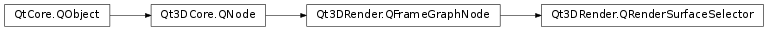

Qt3DRender.QRenderSurfaceSelector¶
Synopsis¶
Functions¶
- def
externalRenderTargetSize() - def
surface() - def
surfacePixelRatio()
Slots¶
- def
setExternalRenderTargetSize(size) - def
setSurface(surfaceObject) - def
setSurfacePixelRatio(ratio)
Signals¶
- def
externalRenderTargetSizeChanged(size) - def
surfaceChanged(surface) - def
surfacePixelRatioChanged(ratio)
Detailed Description¶
Provides a way of specifying the render surface
The
Qt3DRender.QRenderSurfaceSelectorcan be used to select the surface, where Qt3D renders the content. The surface can either be window surface or offscreen surface. ThePySide2.Qt3DRender.Qt3DRender::QRenderSurfaceSelector.externalRenderTargetSize()is used to specify the actual size of the surface when offscreen surface is used.When DPI scaling is used by the system, the logical surface size, which is used by mouse events, and the actual ‘physical’ size of the surface can differ. The
PySide2.Qt3DRender.Qt3DRender::QRenderSurfaceSelector.surfacePixelRatio()is the factor to convert the logical size to the physical size.
-
class
PySide2.Qt3DRender.Qt3DRender.QRenderSurfaceSelector([parent=nullptr])¶ Parameters: parent – PySide2.Qt3DCore.Qt3DCore::QNodeConstructs
QRenderSurfaceSelectorwith givenparent.
-
PySide2.Qt3DRender.Qt3DRender.QRenderSurfaceSelector.externalRenderTargetSize()¶ Return type: PySide2.QtCore.QSizeSee also
PySide2.Qt3DRender.Qt3DRender::QRenderSurfaceSelector.setExternalRenderTargetSize()
-
PySide2.Qt3DRender.Qt3DRender.QRenderSurfaceSelector.externalRenderTargetSizeChanged(size)¶ Parameters: size – PySide2.QtCore.QSize
-
PySide2.Qt3DRender.Qt3DRender.QRenderSurfaceSelector.setExternalRenderTargetSize(size)¶ Parameters: size – PySide2.QtCore.QSizeSets render target
sizeif different than underlying surface size. Tells picking the correct size.See also
PySide2.Qt3DRender.Qt3DRender::QRenderSurfaceSelector.externalRenderTargetSize()
-
PySide2.Qt3DRender.Qt3DRender.QRenderSurfaceSelector.setSurface(surfaceObject)¶ Parameters: surfaceObject – PySide2.QtCore.QObjectSets
surfaceObject.See also
PySide2.Qt3DRender.Qt3DRender::QRenderSurfaceSelector.surface()
-
PySide2.Qt3DRender.Qt3DRender.QRenderSurfaceSelector.setSurfacePixelRatio(ratio)¶ Parameters: ratio – PySide2.QtCore.floatSee also
PySide2.Qt3DRender.Qt3DRender::QRenderSurfaceSelector.surfacePixelRatio()
-
PySide2.Qt3DRender.Qt3DRender.QRenderSurfaceSelector.surface()¶ Return type: PySide2.QtCore.QObjectSee also
PySide2.Qt3DRender.Qt3DRender::QRenderSurfaceSelector.setSurface()
-
PySide2.Qt3DRender.Qt3DRender.QRenderSurfaceSelector.surfaceChanged(surface)¶ Parameters: surface – PySide2.QtCore.QObject
-
PySide2.Qt3DRender.Qt3DRender.QRenderSurfaceSelector.surfacePixelRatio()¶ Return type: PySide2.QtCore.floatSee also
PySide2.Qt3DRender.Qt3DRender::QRenderSurfaceSelector.setSurfacePixelRatio()
-
PySide2.Qt3DRender.Qt3DRender.QRenderSurfaceSelector.surfacePixelRatioChanged(ratio)¶ Parameters: ratio – PySide2.QtCore.float
© 2018 The Qt Company Ltd. Documentation contributions included herein are the copyrights of their respective owners. The documentation provided herein is licensed under the terms of the GNU Free Documentation License version 1.3 as published by the Free Software Foundation. Qt and respective logos are trademarks of The Qt Company Ltd. in Finland and/or other countries worldwide. All other trademarks are property of their respective owners.